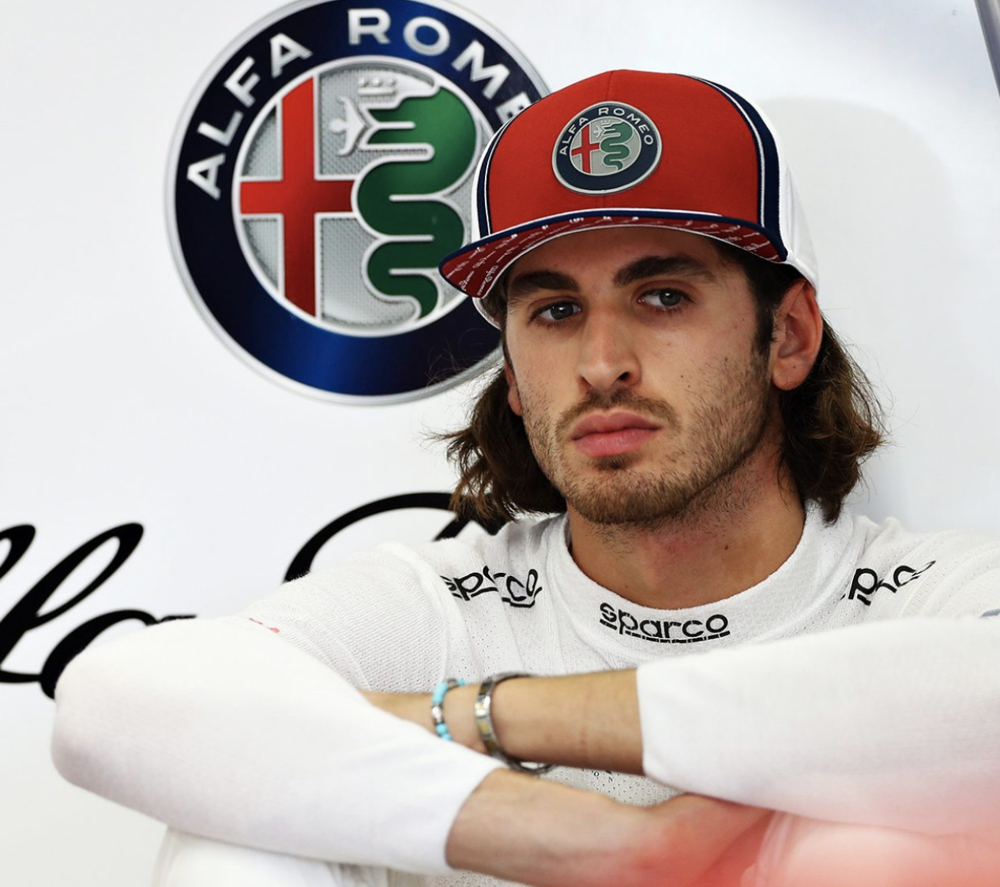
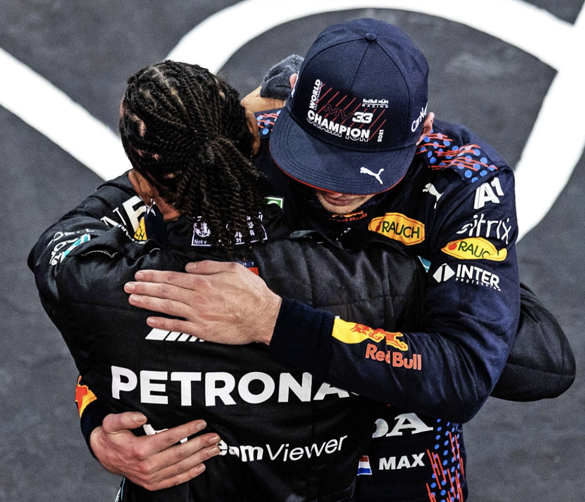

Top Stories
Giovinazzi on his 3 years in F1:
"I'm leaving for now," he told me as we chatted outside the Alfa Romeo hospitality unit.
"I posted my first picture in a F1 car when I was three years old on my social media.
The last picture [in F1] is not this year.
We saw already many drivers have stopped for one year and come back, like Esteban Ocon and Alex Albon."
"On my side, I had two years reserve driving for Ferrari in 2017 and 2018 and finally got my chance in 2019.
You never know what will happen in F1.
For now, I want to say thanks to all the people who have supported me in the last three years,
to all the fans who supported me after the news, and to all the drivers here in F1 who texted me.
It's been a great three years."

SECRET SANTA: What did the F1 drivers give each other for Christmas this year?
Christmas: its the season of giving. And the F1 drivers were clearly feeling generous
this year, as they exchanged presents in the not-particularly-seasonal climes of Abu Dhabi.
Paddle racquets seemed to be the in vogue present this season, with both Esteban Ocon and Pierre
Gasly being treated to them by their Secret Santas.
Click on the button below to see who gave who what this year, as the F1 drivers get stuck into their
Secret Santa.
REVEALED: F1's team bosses choose their Top 10 drivers of 2021
Max Verstappen pipped Lewis Hamilton to the 2021 World Championship to claim his first F1 crown - and he has now picked
up another accolade, as F1's team principals voted the Red Bull racer their number one driver of the year in
our annual poll...
We asked all 10 team bosses to submit their list of the top 10 drivers of the year, under the proviso
that their individual ranking would remain anonymous.
Drivers were awarded scores based on the current F1 points system -
25 for the top driver down to one for 10th in each list. Those scores were combined to create a ranking.
And after clinching his first world title, with a record 18 podiums that included 10 victories,
Verstappen has come out on top for the first time, edging out last year's winner Hamilton by 21 points.

More News
TECH TUESDAY: How Red Bull and Honda cleverly transformed 2020's RB16 into the title-winning RB16B
Max Verstappen became the first Red Bull world champion for eight years with his dramatic and
controversial victory in the Abu Dhabi season finale.
Aside from Verstappen's personal performances, it was the culmination of years of development from both the
team and their power unit partner Honda. Together they have steadily eroded the previously dominant performance
advantage of the Mercedes team.
They have done so with a car - the RB16B - which has remained true to the team's long-established high-rake
aerodynamic concept. This was an extremely effective development of last season's RB16 given the regulatory
freeze restrictions put on everyone for 2021, announced last year in response to the economic challenges of
the pandemic.
